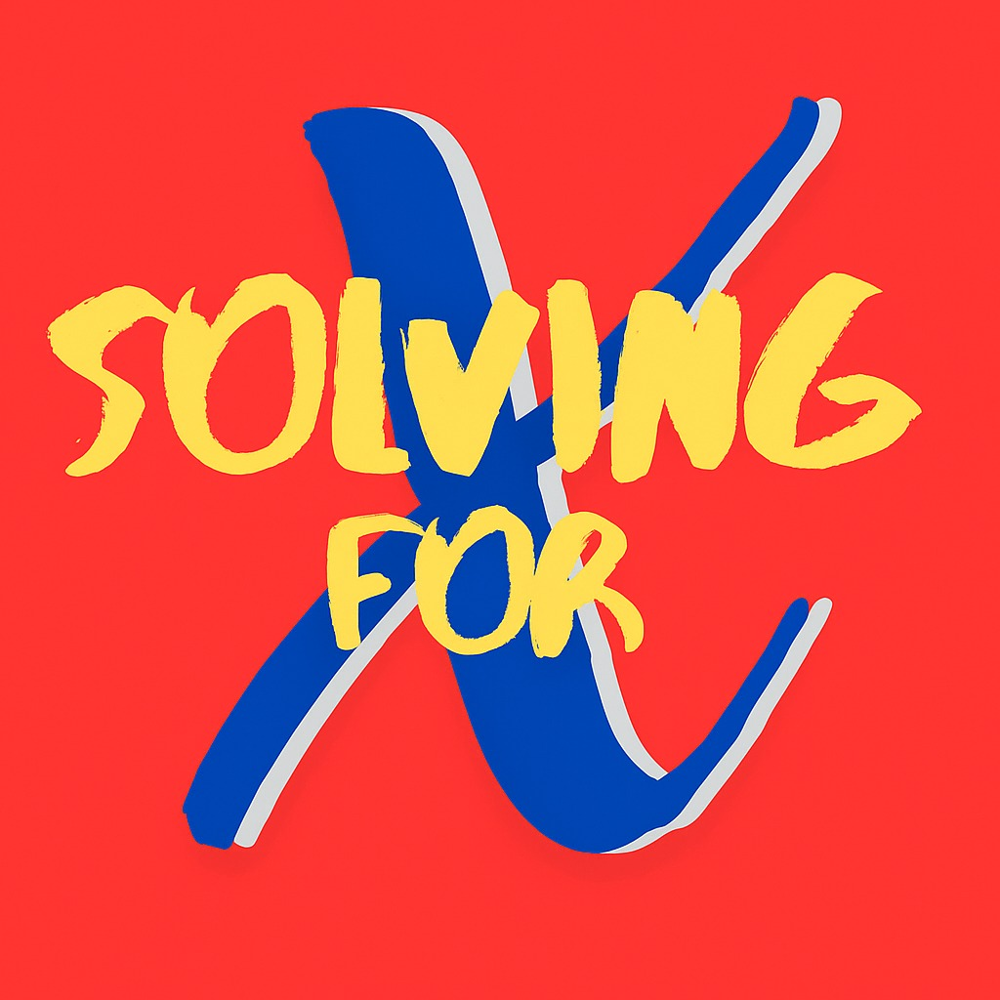

Satellites And Spacelaunch Workshop
Launched minds, not just rockets! We explored satellite tech, orbital mechanics, and the thrill of sending objects to space—all hands-on and fun on the occasion of ISRO's spaDEX launch.

Yuvana Contributions (2024)
Organizing Members of Physics and Biology Committees and participated in main-day Chemistry events. We built projects like a biological boardgame that took the spotlight and showcased experiments on optics and solar-powered cars. Beyond STEM, you could find us in the theatrical plays, the Arts & Sustainability corner with our recycled paper works, and more!

Solving for X
A podcast initiative spanning over 13 episodes exploring the mind-bending corners of STEM and Arts.